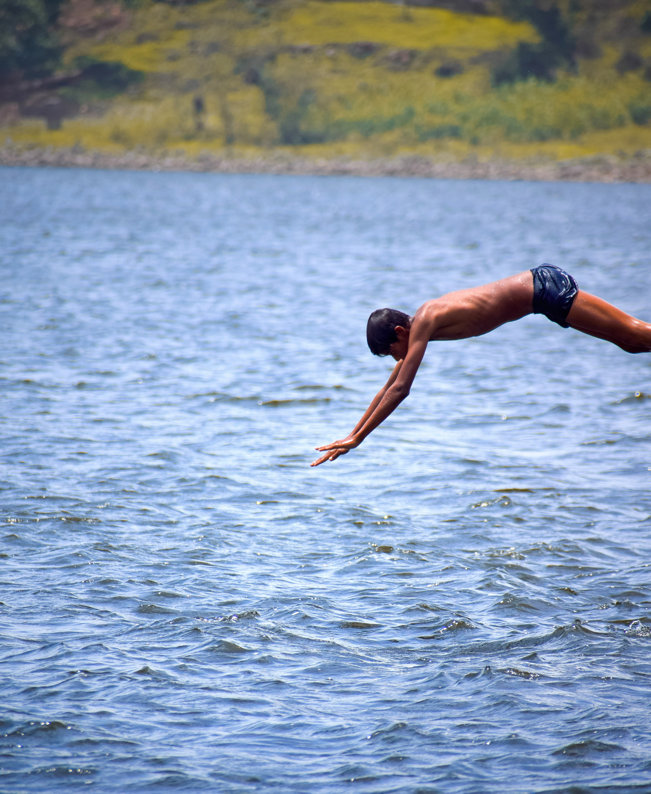

Mumbai
Finding stillness in a city that never stops.
Urban · Street · Architecture
Travel · Street · Portrait
Stories found between destinations.
A visual journal
Selected work
Places change.
Moments remain.
Collections
Finding stillness in a city that never stops.
Urban · Street · Architecture
The quiet at the edge of the day.
Nature · Light · Horizon
I travel to see. I photograph to remember.
India · Journeys · Places
Markets, lanes and the weight of ordinary moments.
People · Cities · LifeFeatured stories
Photographs arranged
as small narratives.

A journey from Mumbai to Agra — through Delhi, the streets of Agra, an early morning at the Taj Mahal and the quiet moments between.
View Story →
A visual study of Mumbai during the monsoon — the reflections, the silence between downpours and the way light changes everything.
View Story →

About
My name is Saurabh. By day I'm a software developer based in Mumbai — building products, systems and interfaces. By every other hour, I'm out with a camera.
Photography is how I slow down. The same attention I bring to writing code — noticing details, finding structure in complexity — is what I look for in a frame. My work explores travel, street life, nature and the relationship between people and the places they inhabit.
Contact
Photography collaborations, travel projects, or just to say hello — find me here: